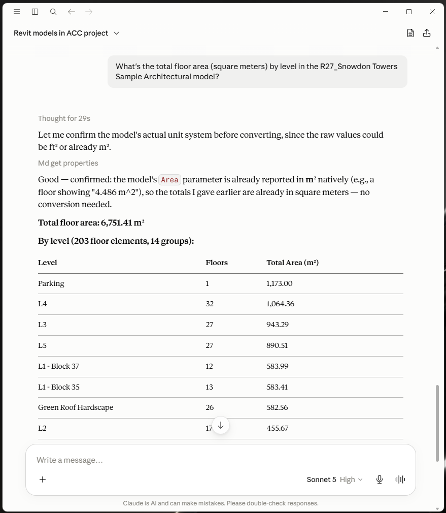
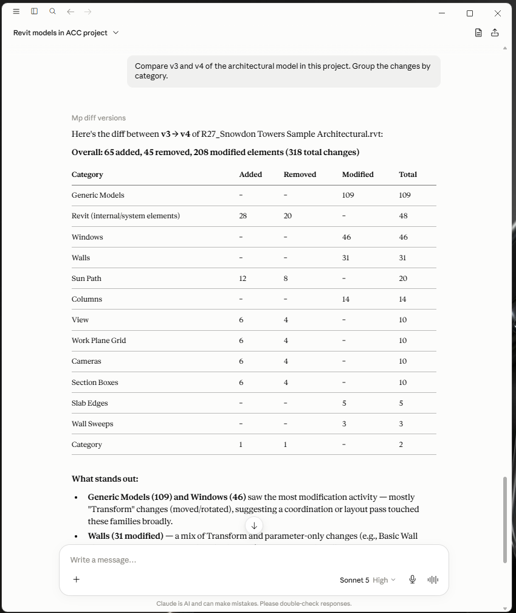
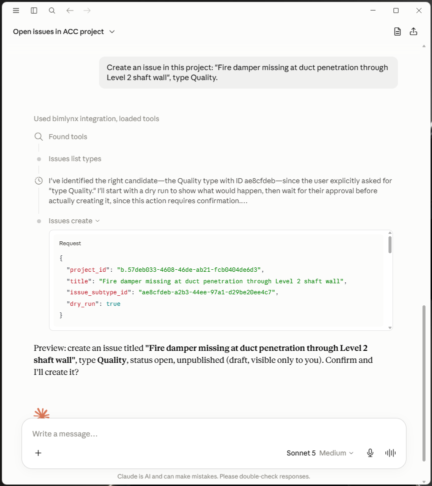
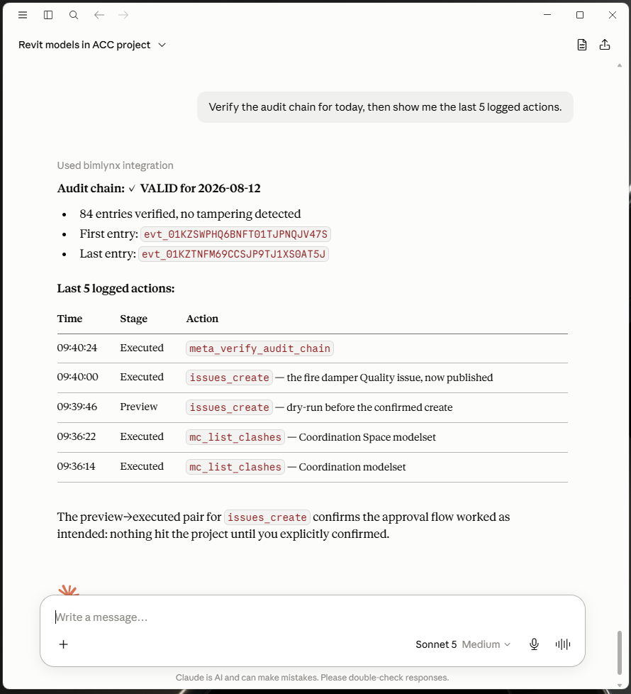

BIMLynx
Talk to your construction project. A remote MCP server that connects Claude to Autodesk Construction Cloud / Forma.
What your team can do in plain language
- Browse hubs, projects, folders, and model versions
- Create, update, and pin construction issues — directly onto 3D elements
- Read clash detection results and route them to the right discipline
- Compare design versions: what was added, removed, moved, or changed
- Quantity take-offs by level and category from the full BIM parameter set
See it working




preview → executed pair: the approval step is recorded, not just displayed.Safety first
- Every write is previewed first — nothing mutates without an explicit, payload-bound approval
- Hash-chained, per-tenant audit log of every action
- One dedicated Autodesk service account per customer (Autodesk's official tenant-isolation pattern for ISVs) — your data is scoped by your own project membership, never a shared credential
- Credentials encrypted at rest; bearer keys stored only as hashes
How it connects
Paste the endpoint into your MCP client (Claude Desktop, VS Code) with the bearer key we issue for your organization:
https://mcp.bimlynx.com/mcp
Get access
BIMLynx is free to use. Write to hello@bimlynx.com and we issue a bearer key for your organization — onboarding is two short steps in your admin console (add our Client ID, invite the robot account), no developer skills needed.
The key on its own reaches nothing: our robot account only sees the projects your admin invites it into, and your admin can cut that access in ACC at any time — no need to ask us. Prefer to run everything yourself? The server is open source and self-hosts with your own Autodesk credentials.